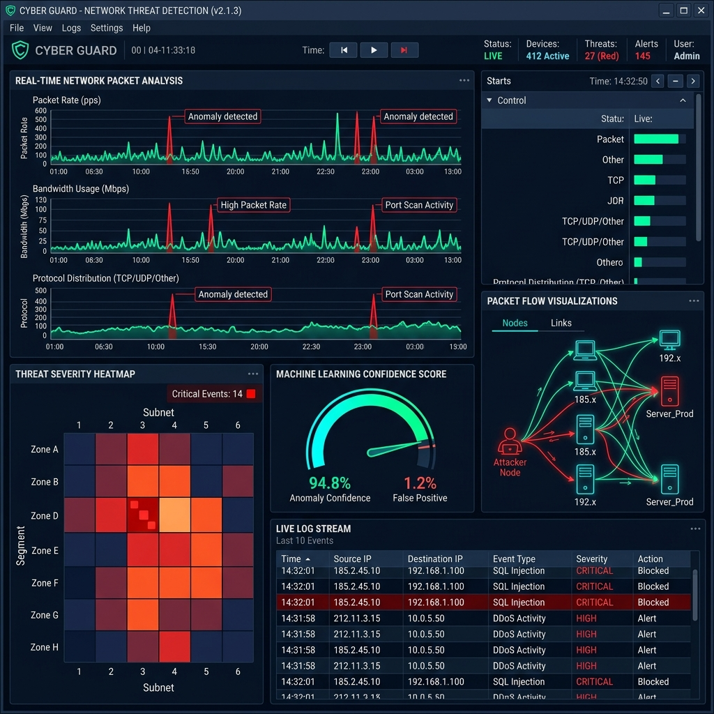
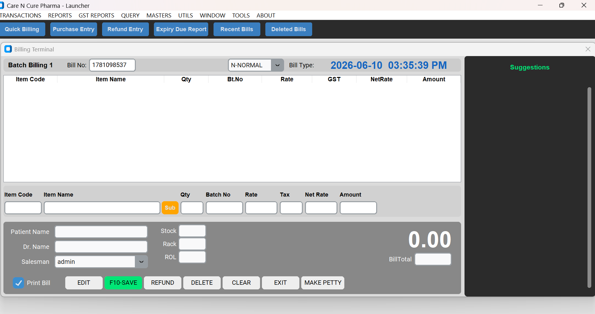
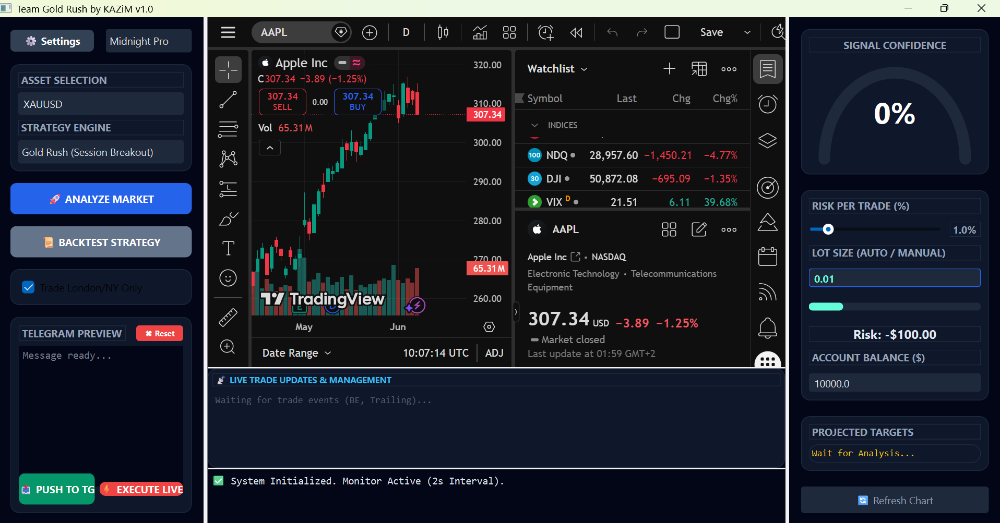
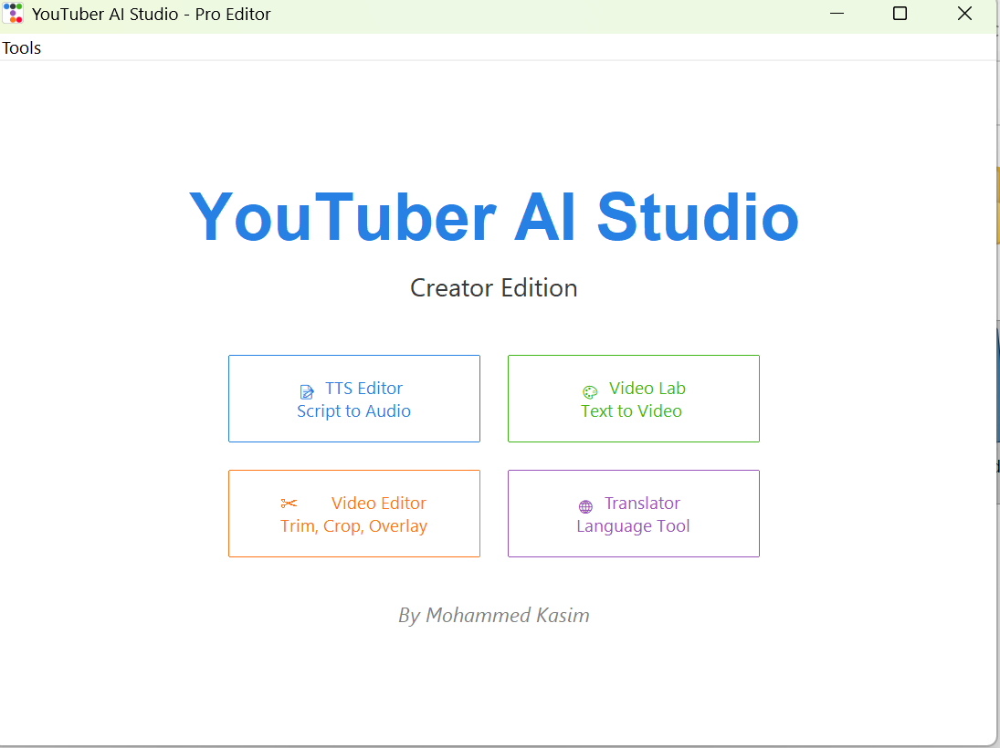
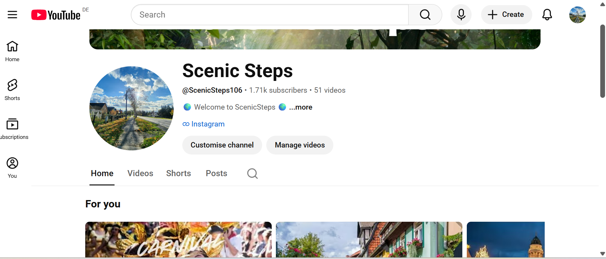
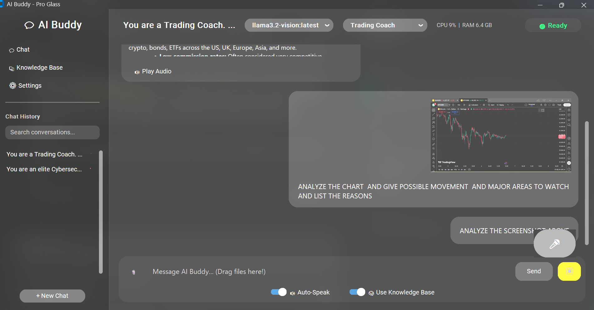

Based in Berlin, Germany
Mohammed Kasim
Cybersecurity Professional & Software Developer specializing in secure system architecture, ML-driven threat detection, and low-latency algorithmic engineering.

Who I Am
About Me
Highly analytical and detail-driven Cybersecurity Professional & Software Developer with a Master of Science in Cybersecurity and a solid foundation in Computer Applications. I specialize in the intersection of secure system architecture, advanced automation engineering, and low-latency algorithmic development.
My engineering philosophy centers on building highly optimized, production-ready applications that solve complex real-world challenges—whether that means implementing machine learning models for real-time threat detection, designing high-density data management architectures, or programming high-frequency execution engines. I thrive on translating intricate technical requirements into secure, high-throughput software systems.
Capabilities
Technical Skills
Languages & Core Development
Python, C++, MQL5, SQL
Cybersecurity Focus
Machine Learning for Threat Detection, Network Security, Secure Code Auditing, Applied Cryptography, Incident Response
Systems & Architecture
Multithreaded Processing, High-Density UI Design, Database Design & Optimization, Local Network Synchronization
Tools & Environments
Git/Version Control, Linux/Unix, MetaTrader 5, REST & Third-Party API Integration
What I've Built
Featured Projects

Drop screenshots/project1.png
Real-Time Machine Learning Threat Detection Suite
Advanced Security Analytics & Low-Latency Network Monitoring.
Developed an end-to-end network traffic analysis and anomaly detection system leveraging machine learning models to identify and flag potential security breaches in real time.
- Architecture: Built an optimized Python data ingestion pipeline to sniff, parse, and analyze high-throughput packets with minimal CPU overhead.
- Interpretability: Implemented classification algorithms to detect anomalous patterns, engineered with an interpretability layer for analysts.
- Data Integrity: Designed a secure logging mechanism that prevents local log tampering, ensuring cryptographic integrity.

Drop screenshots/project2.png
PharmacyOS: Enterprise Retail Suite
Indian Retail Pharmacy Optimization & Regulatory Compliance.
A modern, high-performance desktop application built to optimize speed, regulatory compliance, and profit margins for retail pharmacies in India.
- POS & Substitutions: Keyboard-friendly checkout grid suggesting alternative in-stock brands across a 248,000+ medicine database.
- Procurement & Expiries: Automated calculation of scheme/cash discounts, invoice landed costs, batch details, and expiry alerts.
- Compliance & RBAC: Built-in Scheduled drug managers (H/X/NRx) with doctor validation triggers, locked behind Admin-Cashier access boundaries.

Drop screenshots/project3.png
High-Frequency Algorithmic Systems (Team Gold Rush)
Algorithmic Engineering & Low-Latency Automated Execution.
Under his trading brand Team Gold Rush, he designs, programs, and rigorously backtests low-latency automated trading systems (Expert Advisors) in MQL5 and C++ for highly liquid markets like XAUUSD and Bitcoin, incorporating hardcoded structural risk controls and execution models — developed with AI assistance.
- Execution Logic: Engineered sophisticated liquidity-sweep and market execution algorithms optimized for rapid order placement on XAUUSD and BTC.
- Security: Hardcoded critical structural risk variables and account parameters, protecting client deployments from operational errors.
- Performance: Optimized execution loops to minimize internal latency and ran continuous, multi-year historical tick-data backtests.

Drop screenshots/project4.png
YouTuber TTS: Automated Video Creation Suite
Digital Content & Media Automation Pipeline.
Built a Python-based software suite that automates professional video creation workflows end-to-end — from raw assets to fully synchronized, publish-ready video content.
- Automation Pipeline: Integrates translation services, text-to-speech engines, and media platform APIs (Shutterstock) to transform assets autonomously.
- Media Sync: Produces fully synchronized video content with accurate audio-visual alignment at professional quality standards.
- Scalability: Designed to process high volumes of content with minimal manual intervention, dramatically reducing production time.

Drop screenshots/project5.png
Scenic Steps — YouTube Channel
Immersive Slow TV Walking Tours.
Founded and manage a digital content platform dedicated to producing high-quality, immersive "Slow TV" walking tour experiences for a global audience.
- Content Production: Curates and publishes premium, long-form walking tour videos offering an immersive, real-world travel experience.
- Automation Integration: Leverages the custom TTS automation suite to streamline publishing and localization workflows.
- Audience Growth: Manages channel strategy, SEO, metadata optimization, and audience engagement across the platform.

Drop screenshots/project6.png
Privacy-First Local AI Desktop Companion
Offline LLM Inference, Agentic Orchestration & Dual-Tier Memory.
Engineered a fully local, privacy-first desktop AI companion utilizing Meta's Llama architecture (Llama 3 / 3.1) to handle complex system interactions, long-term contextual memory, and task automation without any external cloud dependency.
- Offline Inference: Deployed a quantized Llama model (GGUF format) via Ollama / llama.cpp with custom 64k+ token context windows and partial GPU layer offloading.
- Dual-Tier Memory: Architected a hybrid memory loop — Short-Term (rolling session buffer) and Long-Term via a local vector database (ChromaDB / VelesDB) with semantic embeddings.
- Agentic Tool Calling: Implemented structured JSON / Jinja function-calling loops enabling OS-level commands, file search, and script triggers.
- Multimodal Voice Interface: Integrated local Whisper STT and TTS engines for a continuous, hands-free voice processing loop.
Academic Background
Education & Credentials
Master of Science (M.Sc.) in Cybersecurity
IU International University of Applied Sciences, Germany
Core Focus: Advanced Cryptography, Network Security Architecture, Machine Learning Applications in Cyber Defense, Penetration Testing, and Incident Management.
Python Full Stack Development
KSTEDS, Kochi
Core Focus: Full-stack web development with Python, covering front-end technologies, back-end frameworks, database integration, and deployment pipelines.
Bachelor of Computer Applications (BCA)
Mahatma Gandhi University, Kottayam
Core Focus: Object-Oriented Programming (OOP), Data Structures & Algorithms, Database Management Systems (DBMS), and Software Engineering Fundamentals.
Let's Connect
Get In Touch
I am currently based in Berlin, Germany, and open to full-time opportunities in Cybersecurity Engineering, Software Development, and Systems Automation — Local & Remote.